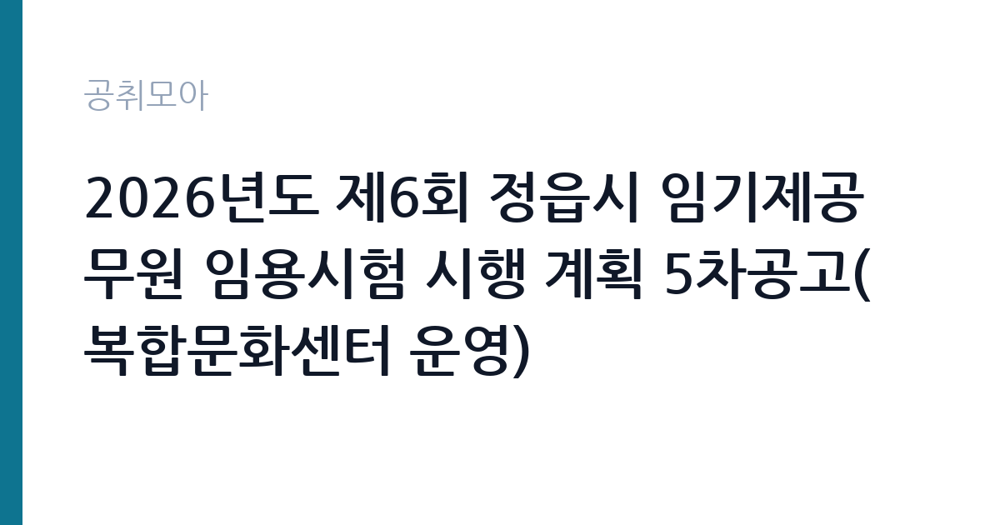

[지자체] 2026년도 제6회 정읍시 임기제공무원 임용시험 시행 계획 5차공고(복합문화센터 운영)
전북특별자치도 정읍시 · 전북 · 마감 2026-10-07 (D-9) · 출처 나라일터

한눈에 보는 모집 조건
| 기관 | 전북특별자치도 정읍시 |
|---|---|
| 공고명 | 2026년도 제6회 정읍시 임기제공무원 임용시험 시행 계획 5차공고(복합문화센터 운영) |
| 고용형태 | 임기제 |
| 근무지 | 전북 |
| 게시일 | 2026-09-29 |
| 마감일 | 2026-10-07 (D-9) |
지원자격, 이렇게 읽으세요
- 시간선택제임기제 마급 1명
- 접수 ~2026-10-07 마감
- 세부 조건은 원문 공고문 확인
응시 자격과 임용 자격 기준은 붙임 공고문을 반드시 직접 확인하셔야 합니다. 복합문화센터 운영 분야 실무 경력이나 관련 자격증이 평가 요소가 될 가능성이 큽니다. 임기제 공고에서 자주 놓치는 함정은 거주지 요건과 경력 인정 범위입니다. 공고일 현재 주민등록상 주소지가 정읍시 또는 전북특별자치도로 제한되는지, 경력증명서 발급이 가능한 경력만 인정되는지를 원문에서 확인하십시오. 시간선택제라 하더라도 결격사유와 병역 요건은 전임 임기제와 동일하게 적용됩니다.
이 공고의 포인트
이 공고의 가장 큰 특징은 복합문화센터 운영이라는 구체적인 단일 직무를 뽑는다는 점입니다. 일반적인 행정 보조가 아니라 시설 운영과 프로그램 관리 실무를 맡게 됩니다. 또한 5차 공고라는 점에 주목하셔야 합니다. 같은 시험의 다섯 번째 공고라는 것은 앞서 충분한 인원을 충원하지 못한 것으로 보이며, 지원자에게는 다시 열린 기회입니다. 시간선택제임기제는 전일제보다 경쟁률이 낮은 편이라 실무 경력을 갖춘 분께는 합격 가능성이 높은 공고입니다.
전형은 어떻게 진행되나
전형은 서류전형 1차와 면접시험 2차로 진행됩니다. 응시원서 접수는 2026년 10월 2일부터 10월 7일까지 3일간이며, 서류전형 합격자는 10월 12일에 발표될 예정입니다. 면접시험 일정과 최종합격자 발표는 추후 별도 공고로 안내됩니다. 필기시험이 없어 서류 완성도와 면접 준비가 당락을 가릅니다. 접수 기간이 짧으므로 공고문을 출력해 제출 서류 목록을 먼저 체크하시기 바랍니다.
원문에서 확인한 전형 방식
임용예정 분야 및 인원 - 복합문화센터 운영 : 1명(시간선택제임기제 마급 1명) ○ 응시 및 임용자격, 기준 : 붙임 공고문 참조 ○ 시험일정 및 시험방법 : 서류전형(1차), 면접시험(2차) - 응시원서 접수 기간: 2026. 10. 2. ~ 10. 7.(3일간) - 서류전형 합격자 발표 : 2026. 10. 12.(월) 예정 - 면접시험 및 최종합격자 발표 : 추후 별도 공고 ※ 기타 자세한 내용은 붙임 공고문을 참조하시기 바랍니다.
이런 분께 추천해요
- 문화시설이나 주민편의시설 운영 경험이 있는 분께 적합합니다. 복합문화센터 운영 실무를 해보신 분이라면 경력이 직접 평가에 반영됩니다.
- 전북 정읍시 거주 또는 근무가 가능한 분께 권합니다. 시간선택제라 육아나 학업과 병행하려는 경력자에게도 맞는 형태입니다.
- 필기시험 없이 서류와 면접으로 승부하려는 분께 유리합니다. 실무 경험과 운영 계획을 말로 설득할 수 있는 분이 강합니다.
지원 전 체크리스트
- 붙임 공고문에서 응시 자격과 경력 인정 기준을 확인했습니다. 특히 관련 분야 근무 경력의 최소 연수와 증빙 서류 양식을 확인하십시오.
- 근무시간과 근무 요일이 명시돼 있는지 확인했습니다. 시간선택제는 주당 근무시간에 따라 보수가 달라지므로 원문 수치를 확인하십시오.
- 접수 방법(방문·우편·온라인)과 마감 시각을 확인했습니다. 접수 기간이 3일에 불과하므로 첫날 접수 목표로 준비하십시오.
- 서류전형 합격자 발표일인 10월 12일과 이후 면접 일정을 달력에 표시했습니다. 면접 공지가 별도로 나므로 정읍시청 홈페이지를 수시로 확인하십시오.
모집 일정과 제출 타이밍
공고 기간을 감안하면 지금부터 접수 마감인 10월 7일까지 약 8일이 남았습니다. 실제 원서 접수는 10월 2일부터 시작되므로 10월 1일까지 경력증명서와 자격증 사본 등 증빙 서류를 완비해 두시는 것이 좋습니다. 서류전형 합격자는 10월 12일에 발표되고 면접은 그 이후에 치러집니다. 접수 첫날에 제출하면 서류 보완 요청에 대응할 여유가 생깁니다.
직무 이해하기: 지자체
복합문화센터 운영 직무는 시설 대관 관리, 문화 프로그램 기획과 진행, 이용객 민원 응대, 안전과 위생 관리가 핵심 업무입니다. 정읍시의 복합문화센터는 시민 문화 향유 공간이므로 주말과 저녁 시간대 프로그램 운영이 잦습니다. 시간선택제 근무 특성상 맡은 시간대의 시설 책임자 역할을 수행하게 됩니다. 예산 집행과 정산, 외주 업체 관리 같은 행정 실무도 포함되므로 시설 운영 경험과 문서 작성 능력이 함께 필요합니다.
자기소개서 작성 팁
자기소개서에서는 막연한 문화 사랑이 아니라 운영 실적을 숫자로 쓰셔야 합니다. 연간 프로그램 운영 건수, 이용객 수, 예산 규모처럼 측정 가능한 경험을 제시하십시오. 정읍시 지역 문화 현황에 대한 이해도 한 문단으로 보여주면 좋습니다. 시간선택제 지원 동기는 근무시간 활용 계획과 연결해 구체적으로 쓰십시오. 5차 공고라는 점을 언급하며 장기 근무 의지를 밝히는 것도 효과적입니다.
면접 준비 포인트
면접에서는 복합문화센터의 당면 과제를 묻는 질문이 나올 가능성이 큽니다. 이용률 제고 방안, 노후 시설 관리, 지역 주민 참여 확대 같은 주제에 본인 경험을 엮어 답변을 준비하십시오. 시간선택제 근무자로서 인수인계와 비상 상황 대응 방식을 구체적으로 말할 수 있어야 합니다. 정읍시의 문화 정책 방향을 시정 홍보 자료에서 미리 파악해 두시면 공직 적합성 질문에 강해집니다.
급여·근무조건 읽는 법
이 공고의 정확한 보수는 붙임 공고문의 보수표에서 확인하셔야 합니다. 참고로 2026년 같은 시간선택제임기제 마급 채용 사례(전남 장성군, 주 35시간 기준)에서는 연봉 하한액 약 2,951만 원에서 상한액 약 4,784만 원 범위에서 경력에 따라 결정됐습니다(출처: 퍼블릭타임스 2026년 보도). 다만 자치단체와 근무시간에 따라 금액이 달라지므로 정읍시 공고문의 수치가 최종 기준입니다. 시간선택제는 근무시간 비율만큼 보수가 산정되며, 2026년 지방공무원 보수는 전년 대비 3.5% 인상됐습니다(출처: 행정안전부 2025년 12월 보도자료).
자주 묻는 질문
- 근무시간은 어떻게 되나요?
시간선택제임기제로 채용되며 주당 근무시간과 근무 요일은 붙임 공고문에서 확인하셔야 합니다. 시간선택제는 통상 주 20시간에서 35시간 사이에서 정해집니다. - 5차 공고라는 것은 무슨 의미인가요?
같은 임용시험의 다섯 번째 모집 공고라는 뜻입니다. 앞선 공고에서 적격자를 다 뽑지 못해 다시 모집하는 것으로, 지원자에게는 추가된 기회입니다. 전형 방법과 자격 기준이 이전과 달라졌을 수 있으니 반드시 최신 공고문으로 확인하십시오. - 면접은 언제 보나요?
서류전형 합격자는 10월 12일에 발표되며, 면접시험과 최종합격자 발표 일정은 추후 별도 공고로 안내됩니다. 정읍시청 홈페이지 공고란을 수시로 확인하시는 것이 좋습니다.
함께 보면 좋은 공고
[지자체] 2026년도 제8회 대전광역시 유성구 임기제공무원 경력경쟁임용시험 공고 — 마감 2026-10-08[지자체] 2026년도 제7회 전남광주통합특별시 지방임기제공무원 임용시험 계획 공고(문화행정, 대외협력지원, 운전 및 공용차량 관리) — 마감 2026-10-08[지자체] 2026년 제8회 옥천군 시간선택제임기제공무원 임용시험 계획 공고(비서) — 마감 2026-10-16출처: 나라일터 공개정보를 바탕으로 공취모아가 정리한 안내글입니다. 모집 조건·일정은 변경될 수 있으니 지원 전 반드시 원문 공고문을 확인하세요. 본 글은 정보 제공용이며 합격을 보장하지 않습니다.